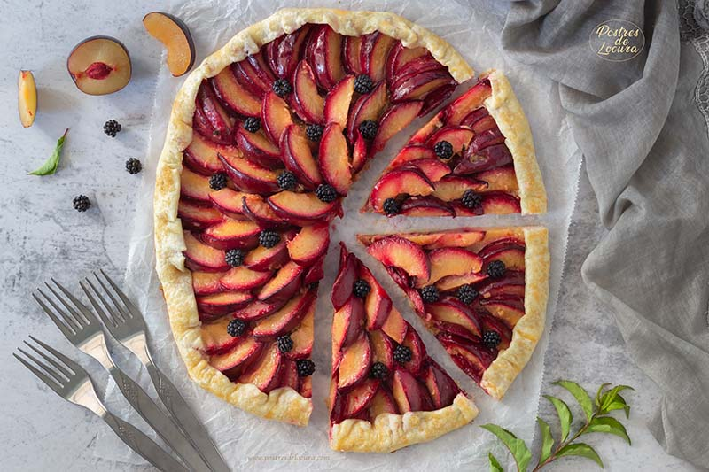
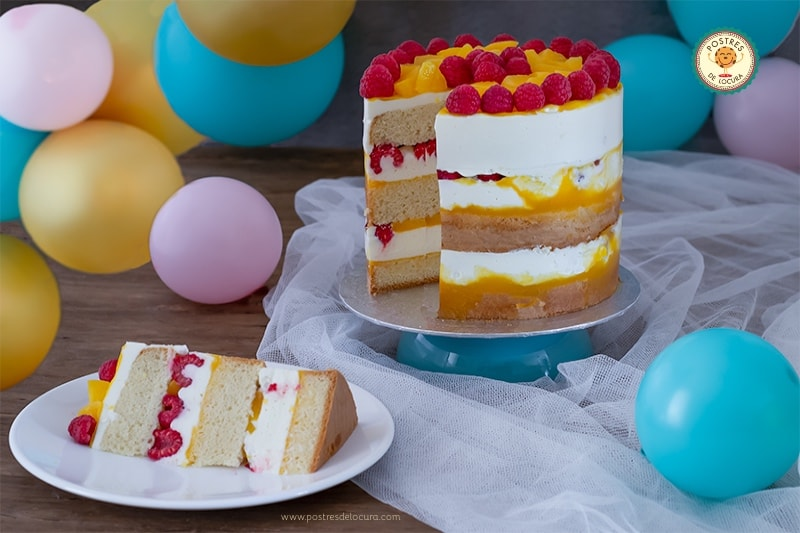
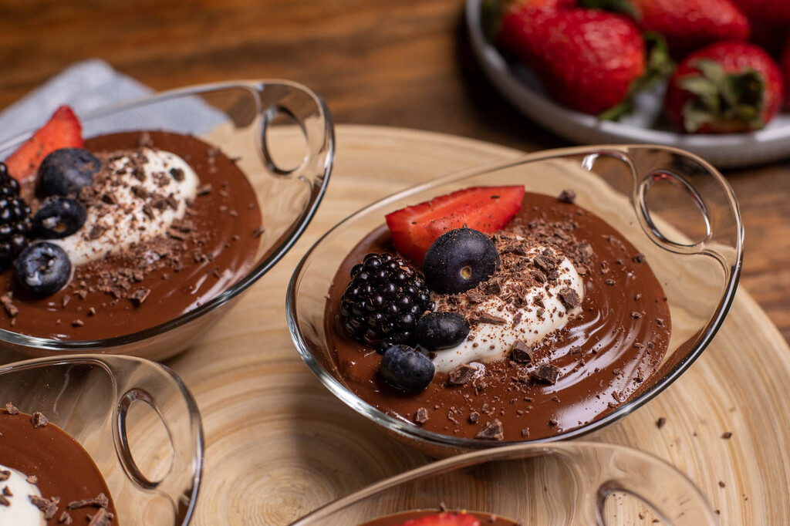
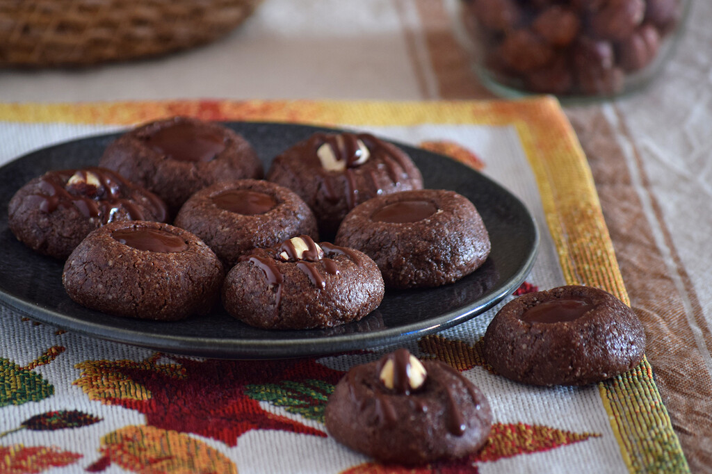
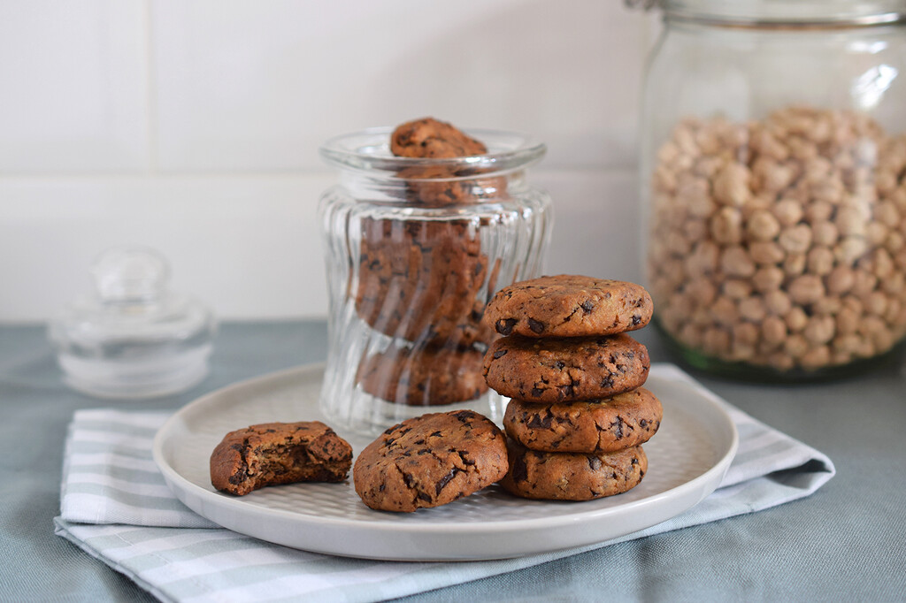

menu de postres
GALETTE DE CIRUELAS Y HOJALDRE
La galette es una especialidad de la repostería francesa, de la zona de Bretaña. Inicialmente se elaboraban con relleno salado, pero hoy son muy populares las galettes con rellenos dulces, especialmente las rellenas con fruta.
precio: $9.900
TARTA DE TURRÓN BLANDO Y CARAMELO SALADO sin horno

El turrón blando que suele proliferar en la época navideña, es ideal para preparar una amplia variedad de postres y hoy me he decidido por esta tarta de turrón blando y caramelo salado sin horno.
precio: $6.900
TARTA DE CUMPLEAÑOS CON MELOCOTÓN Y FRAMBUESAS
Hace unos días fue el cumpleaños de mi hijo y para celebrarlo preparé esta tarta de cumpleaños con melocotón y frambuesas, ya que la ocasión merecía una receta especial.
precio: $10.700
Banda de hojaldre
Banda de hojaldre con crema y manzana: receta de pastelería clásica
precio: $11.900
Crema rápida de chocolate y yogur griego
Crema rápida de chocolate y yogur griego: receta sin azúcar
precio: $9.900
panellets de chocolate, la versión más golosa del tradicional dulce de Todos los Santos
son una gran alternativa para probar en casa, que además suelen triunfar con los más pequeños.Si nos ceñimos a la normativa, que especifica las condiciones que deben cumplir
precio: $7.900
Galletas de chocolate y garbanzos con mantequilla de cacahuete
salada y dulce es algo cada vez más común que nos permite eliminar el gluten y sumar muchos nutrientes más saludables que las harinas refinadas. Y en estas galletas de chocolate no usamos harina de garbanzos, sino la legumbre cocida, debidamente triturada con otros ingredientes también muy nutritivos para lograr unas galletas con el punto justo de dulzor que nos llenarán de energía y saciedad.
precio: $4.900
Flan de tres leches de Pamela Rodríguez
flan de tres leches que el de súper simple (aunque se nos ocurren muchos otros: suave, sabroso, goloso,...). Su elaboración es sencillísima y el resultado soberbio. Este es uno de esos postres en los que el esfuerzo invertido es prácticamente nulo y, a cambio, se obtienen estas maravillas que veis en la foto.